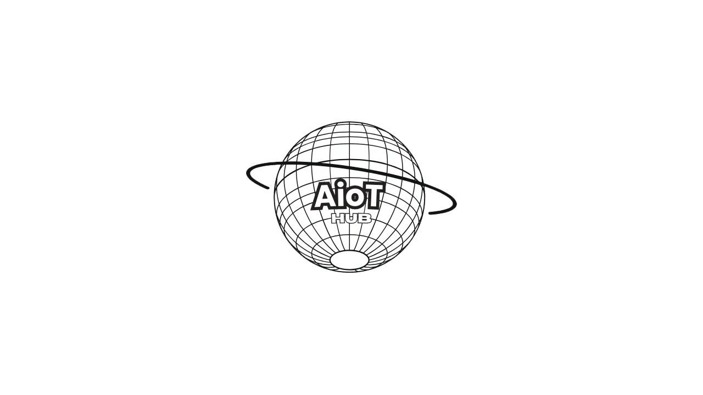

AioT Hub - June 2024
Building a Robot Arm with .NET 8, Raspberry Pi, Blazor and SignalR - Pete Gallagher
Pete is an application architect manager at Avanade doing stuff from investment banking and oil companies and was talking about .NET 8 and getting this onto a Raspberry Pi and more.
.NET 8 is a framework is a framework that allows to deploy anywhere, it is ubiquitous, and Pete has been using it since .NET came out in the early 2000s. What's new in .NET 8 is Aspire which is an opinionated framework to deploy things to the cloud, there are also JSON enhancements, ASRM64 performance improvements and more. .NET Ecosystem momentum shows that 40% of people new to .NET are students, is important for them to be learning it and taking that into industry.
Raspberry Pi Install is not straightforward, but Pete has created a single line install script at bit.ly/dotnet8pi which will get the full version of .NET 8 onto a Raspberry Pi, it doesn't work on a Raspberry Pi 5 as the architecture was changed so the libraries have not been changed. System.Device.Gpio is a NuGet package that supports IO, SPI, PWM and I2C for Raspberry Pi, Beagleboard, Hummingboard, Odroid etc and supports Linux and Windows 10 IoT (although this is not supported) but has very limited support for Raspberry Pi 5 but if you want to deploy pretty apps to a Raspberry Pi you can use Uno Platform.
Raspberry Pi GPIO has board numbering scheme but there is also a BCM numbering scheme, you can flash an LED on a Raspberry Pi to make sure it is working correctly, so connect one side of a resistor to an LED on pin 10 and have pin 26 connected to a button and ground but don't need a resistor to do a pull-up and pull-down but can configure this on the Raspberry Pi then can use C# code to interface with the Raspberry Pi to control the pins to turn on the LED and also have delays between turning on and off the LED so it can be seen. Then as another example can then take the input from the pin to control the LED instead so when pressed it will be high to turn it on and low to turn it off, you can include console output to indicate that it is ready.
Iot.Device.Bindings is a NuGet Package, you can have temperature / humidity sensors then use an IO expander to add more pins than the Raspberry PI supports, can then use an explorer hat and sense hat and there are two of these along with two Raspberry Pi 4s that are on the International Space Station along with servos that can be controlled. Servo Control Board splits the control of servos from their power and connect this to the Raspberry Pi where the first pin is ground and then can connect to the hardware PWM ports of the Raspberry Pi but can also connect to a software PWM port which is provided by the NuGet package.
Servos can be connected incorrectly and won't harm them. Servos are controlled with Pulse Width Modulation with different pulses to control the direction of the servo with small pulses going one way and larger pulses going another way. Servos can be quite cheap so if anything goes wrong then you can replace them easily and cheaply. You can then write code to control the servos by using Iot.Device.ServoMotor which means you don't have to worry about pulse widths and just set the angle along with having System.Device.Pwm and System.Device.Pwm.Drivers which will do the low-level control. In the code you create a Pwm Channel for the chip and port from the GPIO package and the Iot.Device bindings are done by defining the ServoMotor and control the degrees of freedom which is 180 degrees. With the SoftwarePwmChannel you can make sure that it is using the most optimal method so that the performance is the best it can be by setting the last value to true. You can connect many servos to a robot arm to make it move as needed using .NET.
Blazor for real-time control of the robot arm and Blazor is a single page app framework for building interactive client-side web apps with .NET. Blazor was a pet project of Steve Sanderson, is a web UI framework based in C# / Razor and HTML, no JavaScript but still can drop into JS where needed. Blazor support Server Side where DOM changes are communicated with SignalR or Client Side with Web Assembly. Supports client-side .NET with no plugins needed
SignalR was created by David Fowler and Damian Edwards in 2011 and enables bi-directional real-time communications and supports web sockets but if not supported will use long polling and is open source. You can create a SignalR hub to then communicate with other applications such as a Blazor application and when connected it can control the robot arm.
Unity and VR, where Unity is a cross-platform game framework from 2002 and is cross platform and supports .NET Standard 2.0 or C# 8 and support for virtual and mixed reality and can build and deploy directly to the headset but adding NuGet packages can be painful as have to do this manually. You can combine mixed reality to control the robot arm instead of the Blazor as well as being able to see the robot arm in mixed reality.
You can connect other things to the robot arm thanks to the use of the SignalR so can create a .NET MAUI application to control the robot arm which has code almost identical to the Blazor application that can run on mobile but can also have a desktop application to control the robot arm but can also control the robot arm with voice using the speech service in Azure.
.NET everywhere including on Raspberry Pi and have .NET 8 on it and also have a web app deployed to Azure using Blazor and a .NET MAUI mobile and desktop app with voice controls along with mixed reality application. Slides for the talk can be obtained from bit.ly/pjgleedsiot2024.